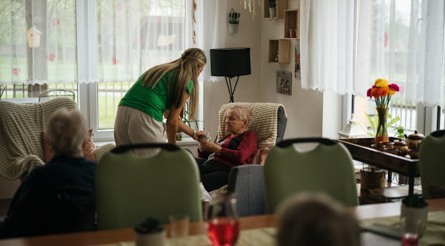

Repositorio de presentaciones interactivas del modelo de atención de CIAS IPS. Cada una desarrolla un componente del servicio, con su marco normativo, flujos de trabajo y herramientas.
Modelo de atención familiar
Modelos de atención · Atención médica domiciliaria
Flujos de trabajo por servicio y contexto (urbano / SISPI), con marco normativo, dispositivos biomédicos y las herramientas en cada etapa.
Abrir presentación →
Modelo de telemedicina
Dashboard de Telemedicina
El modelo de telemedicina de CIAS IPS: las cuatro resoluciones que lo sustentan, el spine FHIR R4, el estado del arte en Colombia y los diferenciadores del servicio.
Abrir dashboard →

Programa de tercera edad
Salud del Adulto Mayor
Valoración geriátrica integral y abordaje por patología: síndromes geriátricos, enfermedades crónicas y discapacidad, cada uno con su flujo de atención domiciliaria, escalas y marco normativo.
Abrir presentación →